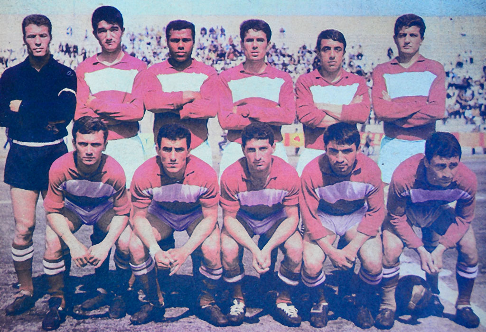

Takım Hakkında
Bandırmaspor'un kuruluşundan önce, Bandırma'da "İdmanyurdu Gençlik" ve "Marmara Gençlik" olmak üzere iki amatör futbol kulübü vardı. 1965 yılında bu iki amatör kulüp birleşme kararı almıştır. 5 Haziran 1965 tarihinde "Balıkesir Bandırmaspor" adıyla, bordo-beyaz renklerle kurulmuştur. Balıkesir ilini temsilen Türkiye 2. Futbol Ligi'ne katılmasıyla, Türkiye profesyonel liglerinde mücadele eden ilk ilçe takımı olmuştur. Aynı zamanda, ilinden önce profesyonel liglere katılan ilk ilçe takımıdır. İlk sezonunda, Kırmızı Grup'u 6. sırada tamamlamıştır. 1966-67 sezonunda Bandırmaspor, Türkiye Kupası'nda yarı finale kadar gelmiş; yarı finalde Altay'a elenmiştir. İlk 2 sezonunda maçlarını Balıkesir Atatürk Stadyumu'nda oynayan takım, 1967-68 sezonu ile birlikte Bandırma 17 Eylül Stadyumu'na taşınmıştır. 1967-68 sezonunda da kupada çeyrek final aşamasına kadar gelen bordo-beyazlılar, Galatasaray'a elenmiştir. 1973-74 sezonunda ligi 15. sırada bitirerek, Türkiye 3. Futbol Ligi'ne düşmüştür. Ertesi sezon, Beyaz Grup'u lider bitirerek yeniden 2. Lig'e yükselmiştir. Uzun süre 2. Lig'de mücadele eden bordo-beyazlı ekip, 1986-87 sezonunda B Grubu'nu sonuncu sırada bitirmiş ve 3. Lig'e düşmüştür. 1988-89 sezonunda grubunu lider bitirerek, 2. Lig'e çıkmıştır. 1992-93 sezonunda, normal sezon sonunda Düşme Grubu'na katılmış ve küme düşmüştür. Uzun bir dönem 3. Lig'de mücadele ettikten sonra, 2004-05 sezonunda grubunu son sırada tamamlayarak Amatör Lig'e düşmüştür. 2008-09 sezonunda, Bandırmaspor yeniden 3. Lig'e yükselmiştir. Ertesi sezon, 3. Lig'de mücadele eden takım, kademe grubunu ezelî rakibi Balıkesirspor'un arkasında, 2. sırada bitirerek Yükselme Grubu'na kalmıştır. Yükselme Grubu'nu 1. sırada bitiren Bandırmaspor, son maçta ikincilik şansı bulunan Siirtspor'u mağlup ederek şampiyon olmuş ve ligi 2. tamamlayan Balıkesirspor ile birlikte 2. Lig'e yükselmiştir. 2015-16 sezonunda beyaz grubu üçüncü tamamlayan Bandırmaspor play-off maçları sonucunda finalde Gümüşhanespor' u 2-0 mağlup ederek 1. Lig'e yükseldi. 1 sezon oynadığı 1. Lig'de 2016-17 sezonunda küme düşmüştür. 2019-20 sezonunda ise 2. Lig Kırmızı Grup'ta şampiyon olarak tekrar TFF 1. Lig'e yükselmiştir. 2021-22 sezonunda normal sezonu 3. sırada bitirerek play-off oynamaya hak kazanmıştır. Play-off yarı finalinde ilk maçı 1-0 kaybettiği Eyüpspor'u ikinci maçta 3-0 yenerek adını finale yazdırmıştır. Kocaeli Stadyumu'nda oynanan play-off final maçında İstanbulspor'a 2-1 yenilerek tarihinde ilk kez Süper Lig'e yükselme şansını yitirmiştir.

